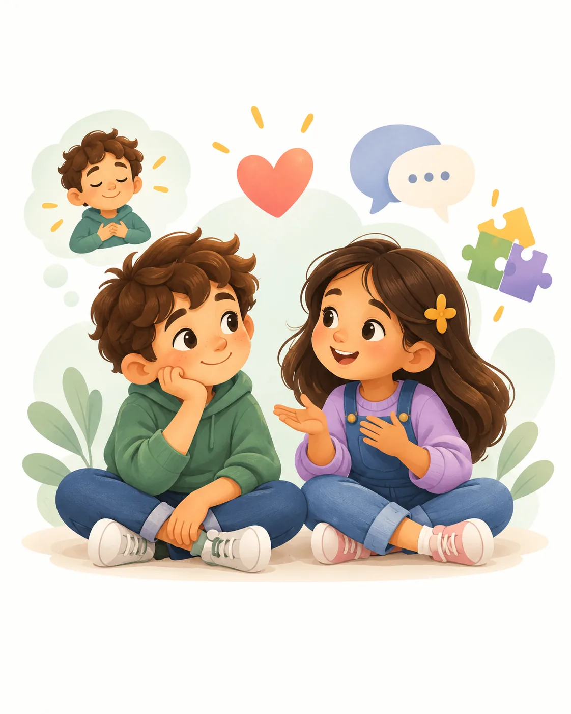

Aprendo a entenderme
La vida escolar y las amistades ocupan cada vez más espacio. El niño puede hablar con mayor detalle de lo que le ocurre, comprender reglas, asumir pequeñas responsabilidades y comparar sus capacidades con las de otros. Es una etapa importante para construir confianza sin convertir el rendimiento en la única medida de valor.

¿Qué quieres comprender primero?
Cada tarjeta abre una página propia con características, ejemplos cotidianos, actividades y habilidades que se pueden fortalecer.
Cuerpo
Mi cuerpo cambia y también aprende nuevas habilidades.
Explorar a profundidad →Pensamiento
Puedo organizarme mejor y empezar a comparar soluciones.
Explorar a profundidad →Emociones
Mi vocabulario emocional empieza a crecer.
Explorar a profundidad →Relaciones
Las amistades empiezan a ocupar más espacio.
Explorar a profundidad →El objetivo no es acelerar el desarrollo, sino acompañarlo.
Estas fuentes orientan la información educativa. Los rangos del sitio son una organización pedagógica y no sustituyen una evaluación individual.